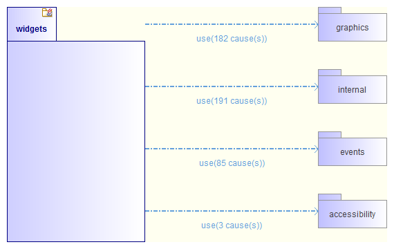

Dependency diagrams¶
The aim of this automatic diagram is to show the incoming and outgoing dependencies of a namespace N, in order to situate it within the system.
This type of diagram answers the questions of “Who uses N?” and “Who does N depend on?”.
Applicable elements¶
Dependency diagrams can be created on any NameSpace.
Contents¶
- Namespace N itself.
- N’s incoming and outgoing NameSpaceUses.
Layout¶
- N is placed in the center of the diagram.
- Incoming NameSpaceUses are placed on the right, and aligned vertically.
- Outgoing NameSpaceUses are placed on the left, and aligned vertically.
- On every NameSpaceUse link, a label indicates the number of “causes”.
- N is vertically resized to ensure regular spacing between links.
Note: All elements present in this diagram have a specific associated style.
Example¶
